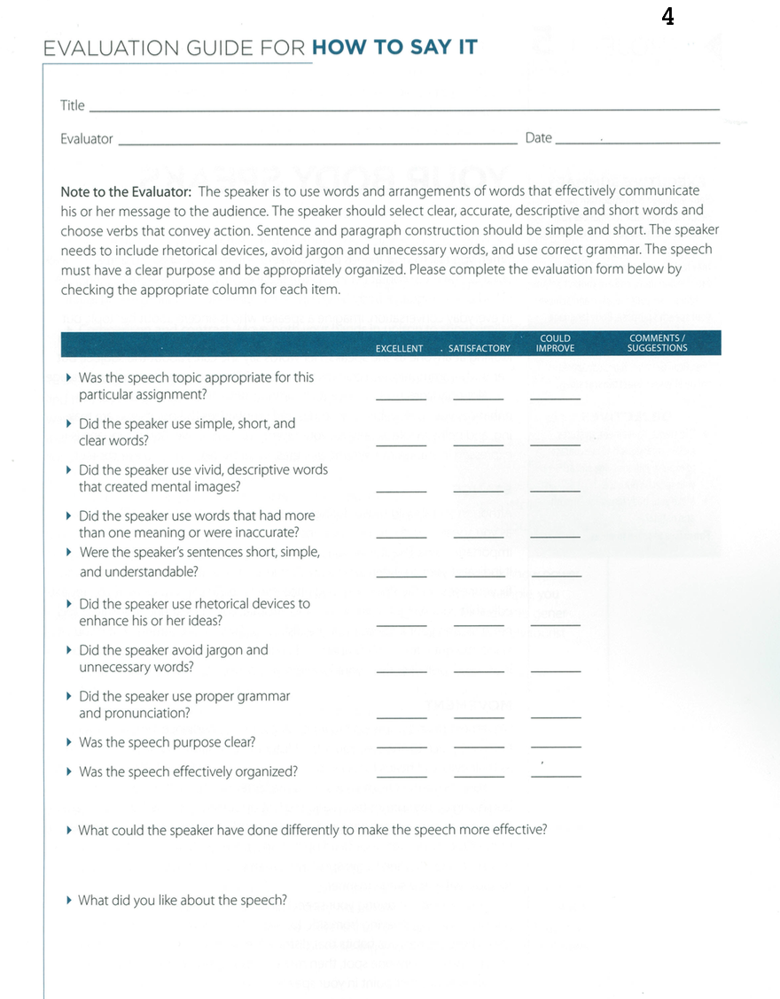

<!-- Main -->
	<div id="main" class="wrapper style1">
		<div class="container">
			<section>
				<div class="10u -1u">
					<header class="major">
						<!-- <h2>Blog</h2> -->
						<!-- <span class="byline">Integer sit amet pede vel arcu aliquet pretium</span> -->
					</header>
					<h2>What is this speech about ?</h2>
					<ul>
						<li>Words are powerful. They convey your message and influence the audience and its perception of you.</li>
						 <li>Word choice and arrangement need just as much attention as speech organization and purpose.</li>
						  <li>Select clear, accurate, descriptive and short words that best communicate your ideas and arrange them effectively and correctly.</li>
							<li>Every word should add value, meaning and punch to the speech.</li>

</ul><br>
<h2>Objectives</h2>
<ul>

<li>Select the right words and sentence structure to communicate your ideas clearly, accurately and vividly.</li>
	 <li>Use rhetorical devices to enhance and emphasize ideas.</li>
	 <li>Eliminate jargon and unnecessary words. Use correct grammar.</li>
	 <li>Time: Five to seven minutes.</li>
</ul><br>
<h2>Evaluation</h2>
Download: <a href="Evaluation4.pdf"></a>
	<br>

	<h2>More Resources</h2>
	<ul>
		<li><a href="http://sixminutes.dlugan.com/toastmasters-speech-2-organize-your-speech/">Organize Your Speech</a></li>
		<li>  <a href="http://sixminutes.dlugan.com/rule-of-three-speeches-public-speaking/">Rule of Three in Speeches</a></li>
</ul>


				</div>
			</section>
		</div>
	</div>
